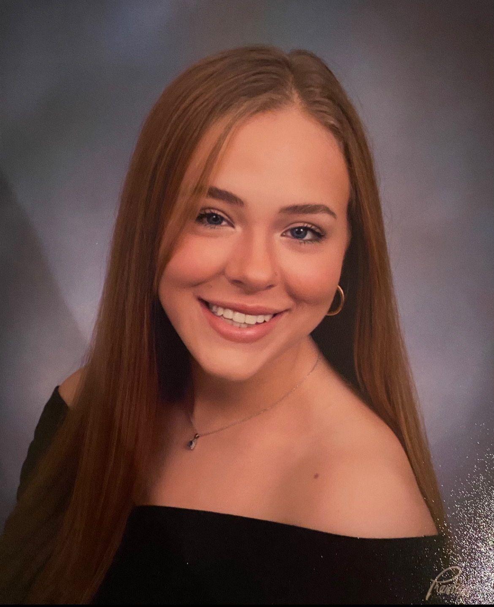

Viviane Stackhouse
Journalism student

vivstackhouse@gmail.com
LinkedIn: https://www.linkedin.com/in/viviane-stackhouse-61262524b/
Twitter: https://twitter.com/vivistackhouse
GitHub: https://github.com/vstackho
I am an undergraduate journalism student at the Philip Merrill College of Journalism at the University of Maryland. I am majoring in Multi-Platform Journalism with a minor in sociology.
Experience
Waitress
Iron Hill Brewery
May 2022 - Present
I am a waitress at a popular corporate restaurant which consists of taking orders, engaging in customer service and preparing food.
Waitress
Sicilian Trattoria
June 2019-January 2022
Promoted from busser. Job duties include setting tables, cleaning and organizing, serving customers, assisting the owner with restaurant management, taking reservations, preparing food, and organizing events.
Busser
Sicilian Trattoria
June 2018-May 2019
Cleared tables, assisted kitchen staff, front of house staff, and customers.
Education
- B.A., Journalism major, Sociology minor, University of Maryland, May 2025 (expected)
- Cheltenham Highschool, 2021
Skills
- Photo editing with Adobe Photoshop and Lightroom
- Social media design with Canva
- Experience with feature writing for on-campus news outlets